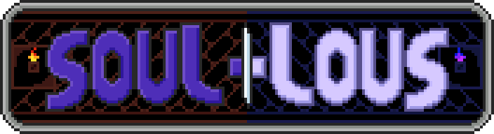

In this 2D puzzle platformer, you take control of Nolon and guide both his body and spirit to try and escape the labyrinth! You'll need to push boxes, press switches and open doors throughout both the physical and spirit worlds to make it through each level. Both the physical and spirit worlds are linked, so teamwork between Nolon's body and spirit are required to solve puzzles. There are 8 levels, with possibly a few extra secret levels to be found!
An older version of this game was made for my first ever game jam, the "Queen's Game Jam 2024", where it won first place overall. After the jam, I returned to this game to add more content and give it more polish, which lead this game to becoming my first fully original high quality game project. Everything in this game, from the programming, art and music are all of my own creation.
Want to play this game for yourself? Check it out on my itch.io page!
The game jam I originally made this game for lasted for about 2 days, and the theme of the jam was 'Symmetry'. The way I tied my game into the theme was mainly in the level design of each level. In each level, there is always a physical and spiritual world. The geometry of the level is mirrored between both of the worlds, but boxes and switches remain the same place between both worlds. This created a challenge in designing levels: I had to ensure that each level had some way of being mirrored, but also allow the objects that remain in the same spots to be placed without conflicting with the level layout.
Between both worlds, the player has to guide two characters. One is Nolon's body, which has to navigate each level with typical platformer mechanics. The other player is Nolon's spirit, which can fly around levels and possess boxes found in levels to move them freely around. The spirit can also possess a box and leave it floating in the air before switching back to the physical world. If this is done, the box can become a floating platform for Nolon's body to platform off of.
Both characters need to work together to reach the end of each level, by pushing boxes and pressing switches to open doors that are unique to each world. One of the hardest parts about coding the game during the jam for me was simply keeping buttons pressed between world switches. In the game, Nolon's body can stand on a switch before swapping to the spirit world. If this is done, the button is also held down inside the spirit world, not requiring a box. Since I also had to make sure that neither player character could appear outside of their respective worlds, coding the buttons in this way took me a fair bit to figure out. In the original game jam release, the system I made wasn't perfect either. There originally was a small bug where the spirit could put a box onto a held switch to release it without swapping back to the physical world.
The first version of the game I created for the jam featured 4 levels, with a fully original pixel art and music. Out of the 6 categories the games in the jam were ranked off of, Soul-louS won first place in Graphics, Audio, Fun/Game Feel and Stability, and won second place in Theme and Originality. This still allowed my game to win first place in the jam overall. Later on, I went back to the project to completely remaster the music and art, while also adding in 6 more levels and fixing various bugs I found in the game jam version. The game is now my first fully original high quality project, and the first project to be added onto my itch.io game collection.